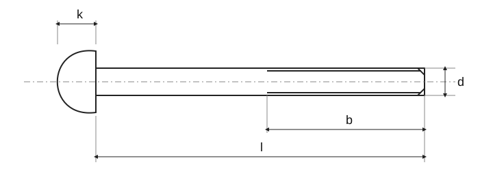

Cross-recessed pan head tapping screws

Cross-recessed pan head tapping screws · Standards context
| Item | Standards context |
|---|---|
| ISO | A related standard is not automatically a dimensionally interchangeable replacement for old ČSN or DIN. Changing the year alone does not update dimensions. |
| — | The complete standard is needed to verify dimensions, tolerances and all conditions. |
Cross-recessed pan head tapping screws · Dimensions
Historical source; numeric values and exceptions have not been fully verified against the current standard.
| Parameter | ST2,2 | ST2,9 | ST3,5 | ST4,2 | ST4,8 | ST5,5 | ST6,3 | ST8 | ST9,5 |
|---|---|---|---|---|---|---|---|---|---|
| Pitch P | 0.8 | 1.1 | 1.3 | 1.4 | 1.6 | 1.8 | 1.8 | 2.1 | 2.1 |
| a _max.1) | 0.8 | 1.1 | 1.3 | 1.4 | 1.6 | 1.8 | 1.8 | 2.1 | 2.1 |
| d _a max. | 2.8 | 3.5 | 4.1 | 4.9 | 5.6 | 6.3 | 7.3 | 9.2 | 10.7 |
| d _k max. | 4 | 5.6 | 7 | 8 | 9.5 | 11 | 12 | 16 | 20 |
| d _k min. | 3.7 | 5.3 | 6.64 | 7.64 | 9.14 | 10.57 | 11.57 | 15.57 | 19.48 |
| k _max. | 1.6 | 2.4 | 2.6 | 3.1 | 3.7 | 4 | 4.6 | 6 | 7.50 |
| k _min. | 1.4 | 2.15 | 2.35 | 2.8 | 3.4 | 3.7 | 4.3 | 5.6 | 7.1 |
| r _min. | 0.1 | 0.1 | 0.1 | 0.2 | 0.2 | 0.25 | 0.25 | 0.4 | 0.4 |
| r _f≈ | 3.2 | 5 | 6 | 6.5 | 8 | 9 | 10 | 13 | 16 |
| Cross recess · Cross-recess size | 0 | 1 | 2 | 2 | 2 | 3 | 3 | 4 | 4 |
| Cross recess · Tvar H · m | 1.9 | 3 | 3.9 | 4.4 | 4.9 | 6.4 | 6.9 | 9 | 10.1 |
| Cross recess · Tvar H · hloubka_min. | 0.85 | 1.4 | 1.4 | 1.9 | 2.4 | 2.6 | 3.1 | 4.15 | 5.2 |
| Cross recess · Tvar H · hloubka_max. | 1.2 | 1.8 | 1.9 | 2.4 | 2.9 | 3.1 | 3.6 | 4.7 | 5.8 |
| Cross recess · Tvar Z · m | 2 | 3 | 4 | 4.4 | 4.8 | 6.2 | 6.8 | 8.9 | 10.1 |
| Cross recess · Tvar Z · hloubka_min. | 0.95 | 1.45 | 1.5 | 1.95 | 2.3 | 2.55 | 3.05 | 4.05 | 5.25 |
| Cross recess · Tvar Z · hloubka_max. | 1.2 | 1.75 | 1.9 | 2.35 | 2.75 | 3 | 3.5 | 4.5 | 5.7 |
| y ^2) · Tvar C | 2 | 2.6 | 3.2 | 3.7 | 4.3 | 5 | 6 | 7.5 | 8 |
| y ^2) · Tvar F | 1.6 | 2.1 | 2.5 | 2.8 | 3.2 | 3.6 | 3.6 | 4.2 | 4.2 |
Cross-recessed pan head tapping screws · Dimensions
Historical source; numeric values and exceptions have not been fully verified against the current standard.
| l [mm] | tvar C | Δl | tvar F^4) | l _min. | d / ST2,2 | d / ST2,9 | d / ST3,5 | d / ST4,2 | d / ST4,8 | d / ST5,5 | d / ST6,3 | d / ST8 | d / ST9,5 |
|---|---|---|---|---|---|---|---|---|---|---|---|
| 4.5 | 0.8 | 3.7 | + | – | – | – | – | – | – | – | – |
| 6.5 | 0.8 | 5.7 | + | + | – | – | – | – | – | – | – |
| 9.5 | 0.8 | 8.7 | + | + | + | + | + | – | – | – | – |
| 13 | 0.8 | 12.2 | + | + | + | + | + | + | + | – | – |
| 16 | 0.8 | 15.2 | + | + | + | + | + | + | + | + | + |
| 19 | 0.8 | 18.2 | — | + | + | + | + | + | + | + | + |
| 22 | 0.8 | 20.7 | — | — | + | + | + | + | + | + | + |
| 25 | 0.8 | 23.7 | — | — | + | + | + | + | + | + | + |
| 32 | 1.3 | 30.7 | — | — | — | + | + | + | + | + | + |
| 38 | 1.3 | 36.7 | — | — | — | — | + | + | + | + | + |
| 45 | 1.3 | 43.5 | — | — | — | — | — | — | — | + | + |
| 50 | 1.3 | 48.5 | — | — | — | — | — | — | — | + | + |
Cross-recessed pan head tapping screws · Standards context
| Item | Value |
|---|---|
| Standards context | ISO 8992:2005 |
| Product grade | — |
| Property class | The complete standard is needed to verify dimensions, tolerances and all conditions. |
Cross-recessed pan head tapping screws · Standards context
| Item | Standards context |
|---|---|
| ISO | A related standard is not automatically a dimensionally interchangeable replacement for old ČSN or DIN. Changing the year alone does not update dimensions. |
| — | The complete standard is needed to verify dimensions, tolerances and all conditions. |
Cross-recessed pan head tapping screws · Dimensions
Historical source; numeric values and exceptions have not been fully verified against the current standard.
| Parameter | ST2,2 | ST2,9 | ST3,5 | ST4,2 | ST4,8 | ST5,5 |
|---|---|---|---|---|---|---|
| Pitch P | 0.8 | 1.1 | 1.3 | 1.4 | 1.6 | 1.8 |
| a _max.1) | 0.8 | 1.1 | 1.3 | 1.4 | 1.6 | 1.8 |
| d _a max. | 2.8 | 3.5 | 4.1 | 4.9 | 5.6 | 6.3 |
| d _k max. | 4 | 5.6 | 7 | 8 | 9.5 | 11 |
| d _k min. | 3.7 | 5.3 | 6.64 | 7.64 | 9.14 | 10.57 |
| k _max. | 1.6 | 2.4 | 2.6 | 3.1 | 3.7 | 4 |
| k _min. | 1.4 | 2.15 | 2.35 | 2.8 | 3.4 | 3.7 |
| r _min. | 0.1 | 0.1 | 0.1 | 0.2 | 0.2 | 0.25 |
| r _f≈ | 3.2 | 5 | 6 | 6.5 | 8 | 9 |
| Cross recess · Cross-recess size | 0 | 1 | 2 | 2 | 2 | 3 |
| Cross recess · Tvar H · m | 1.9 | 3 | 3.9 | 4.4 | 4.9 | 6.4 |
| Cross recess · Tvar H · hloubka_min. | 0.85 | 1.4 | 1.4 | 1.9 | 2.4 | 2.6 |
| Cross recess · Tvar H · hloubka_max. | 1.2 | 1.8 | 1.9 | 2.4 | 2.9 | 3.1 |
| Cross recess · Tvar Z · m | 2 | 3 | 4 | 4.4 | 4.8 | 6.2 |
| Cross recess · Tvar Z · hloubka_min. | 0.95 | 1.45 | 1.5 | 1.95 | 2.3 | 2.55 |
| Cross recess · Tvar Z · hloubka_max. | 1.2 | 1.75 | 1.9 | 2.35 | 2.75 | 3 |
| y ^2) · Tvar C | 2 | 2.6 | 3.2 | 3.7 | 4.3 | 5 |
| y ^2) · Tvar F | 1.6 | 2.1 | 2.5 | 2.8 | 3.2 | 3.6 |
Cross-recessed pan head tapping screws · Dimensions
Historical source; numeric values and exceptions have not been fully verified against the current standard.
| Parameter | ST6,3 | ST8 | ST9,5 |
|---|---|---|---|
| Pitch P | 1.8 | 2.1 | 2.1 |
| a _max.1) | 1.8 | 2.1 | 2.1 |
| d _a max. | 7.3 | 9.2 | 10.7 |
| d _k max. | 12 | 16 | 20 |
| d _k min. | 11.57 | 15.57 | 19.48 |
| k _max. | 4.6 | 6 | 7.50 |
| k _min. | 4.3 | 5.6 | 7.1 |
| r _min. | 0.25 | 0.4 | 0.4 |
| r _f≈ | 10 | 13 | 16 |
| Cross recess · Cross-recess size | 3 | 4 | 4 |
| Cross recess · Tvar H · m | 6.9 | 9 | 10.1 |
| Cross recess · Tvar H · hloubka_min. | 3.1 | 4.15 | 5.2 |
| Cross recess · Tvar H · hloubka_max. | 3.6 | 4.7 | 5.8 |
| Cross recess · Tvar Z · m | 6.8 | 8.9 | 10.1 |
| Cross recess · Tvar Z · hloubka_min. | 3.05 | 4.05 | 5.25 |
| Cross recess · Tvar Z · hloubka_max. | 3.5 | 4.5 | 5.7 |
| y ^2) · Tvar C | 6 | 7.5 | 8 |
| y ^2) · Tvar F | 3.6 | 4.2 | 4.2 |
Cross-recessed pan head tapping screws · Dimensions
Historical source; numeric values and exceptions have not been fully verified against the current standard.
| l [mm] | tvar C | Δl | tvar F^4) | l _min. | d / ST2,2 | d / ST2,9 | d / ST3,5 | d / ST4,2 |
|---|---|---|---|---|---|---|
| 4.5 | 0.8 | 3.7 | + | – | – | – |
| 6.5 | 0.8 | 5.7 | + | + | – | – |
| 9.5 | 0.8 | 8.7 | + | + | + | + |
| 13 | 0.8 | 12.2 | + | + | + | + |
| 16 | 0.8 | 15.2 | + | + | + | + |
| 19 | 0.8 | 18.2 | — | + | + | + |
| 22 | 0.8 | 20.7 | — | — | + | + |
| 25 | 0.8 | 23.7 | — | — | + | + |
| 32 | 1.3 | 30.7 | — | — | — | + |
| 38 | 1.3 | 36.7 | — | — | — | — |
| 45 | 1.3 | 43.5 | — | — | — | — |
| 50 | 1.3 | 48.5 | — | — | — | — |
Cross-recessed pan head tapping screws · Dimensions
Historical source; numeric values and exceptions have not been fully verified against the current standard.
| l [mm] | d / ST4,8 | d / ST5,5 | d / ST6,3 | d / ST8 | d / ST9,5 |
|---|---|---|---|---|---|
| 4.5 | – | – | – | – | – |
| 6.5 | – | – | – | – | – |
| 9.5 | + | – | – | – | – |
| 13 | + | + | + | – | – |
| 16 | + | + | + | + | + |
| 19 | + | + | + | + | + |
| 22 | + | + | + | + | + |
| 25 | + | + | + | + | + |
| 32 | + | + | + | + | + |
| 38 | + | + | + | + | + |
| 45 | — | — | — | + | + |
| 50 | — | — | — | + | + |
Cross-recessed pan head tapping screws · Standards context
| Item | Value |
|---|---|
| Standards context | ISO 8992:2005 |
| Product grade | — |
| Property class | The complete standard is needed to verify dimensions, tolerances and all conditions. |